함께지음 사용 가이드
함께지음은 순원·팀원을 돌보는 리더를 위한 기록 앱이에요. 앱 아래에 있는 다섯 개의 탭 순서대로 모든 기능을 정리했어요. 처음이라면 시작하기부터 차례로 읽어 보세요.
화면은 예시 데이터로 찍었어요. 공간 유형에 따라 '순원·순모임'이 '팀원·팀모임', '부서원·부서 모임'처럼 바뀌어 보여요. 이 가이드는 '순' 공간을 기준으로 썼어요.
1. 시작하기
함께지음은 '공간' 단위로 기록을 나눠요. 순장이면서 찬양팀도 섬긴다면 공간을 두 개 만들면 돼요. 공간끼리는 순원도 기록도 섞이지 않아요.
공간 만들기

앱을 처음 열면 공간 선택 화면이 나와요. 공간 만들기를 눌러 첫 공간을 만들어요.
공간 이름과 유형

- 이름: 예) 청년 3순, 찬양팀, 새가족부
- 유형: 순 · 사역팀 · 부서 · 기타 중에서 골라요. 유형에 따라 앱 안의 말이 바뀌어요.
| 유형 | 구성원 | 모임 |
|---|---|---|
| 순 | 순원 | 순모임 |
| 사역팀 | 팀원 | 팀모임 |
| 부서 | 부서원 | 부서 모임 |
| 기타 | 구성원 | 모임 |
- 목적(선택): 이 공간에서 함께 돌볼 방향을 적어 두는 칸이에요.
- 예시 내용 채우기: 켜면 연습용 순원과 기록이 들어가요. 써 보고 익숙해지면 그 공간을 지우고 새로 만드세요.
공간 바꾸기·수정·삭제
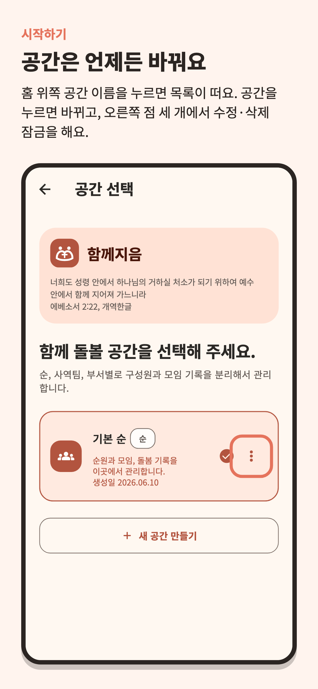
- 바꾸기: 홈 위쪽의 공간 이름(⇄ 표시)이나 다른 탭 오른쪽 위 ⇄ 를 누르면 공간 목록이 떠요. 원하는 공간을 누르면 바로 바뀌어요.
- 수정: 공간 오른쪽 점 세 개 → 수정에서 이름·유형·목적을 고쳐요.
- 삭제 잠금: 실수로 지우지 않도록 잠가 둘 수 있어요. 잠긴 공간은 잠금을 풀어야 삭제돼요.
- 삭제: 그 공간의 구성원, 돌봄 기록, 기도제목, 모임, 출석 기록이 모두 함께 지워지고 되돌릴 수 없어요. 지우기 전에 백업을 먼저 해 두세요.
2. 홈
앱을 열면 가장 먼저 보이는 화면이에요. 오늘 챙길 사람과 일이 모여 있어요.
오늘의 돌봄
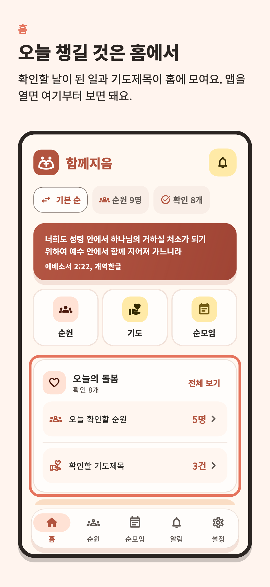
- 맨 위 줄: 지금 공간 이름, 순원 수, 확인할 일 수가 보여요. 공간 이름을 누르면 공간을 바꿀 수 있고, 오른쪽 위 종을 누르면 알림 탭으로 가요.
- 바로가기 세 칸: 순원 → 순원 탭, 기도 → 알림 탭의 기도제목만, 순모임 → 순모임 탭으로 가요.
- 오늘의 돌봄
- 오늘 확인할 순원: 확인 예정일이 된 '다음에 물어볼 것'이 있거나, 오래 연락하지 못한 순원이에요. 며칠을 '오래'로 볼지는 연락 리마인더에서 정해요.
- 확인할 기도제목: 확인 예정일이 된 기도제목이에요.
- 전체 보기를 누르면 알림 탭에서 전부 볼 수 있어요.
아직 기록이 하나도 없으면 '첫 기록을 시작해 볼까요?' 안내와 함께 순원 추가·순모임 추가 버튼이 보여요.
다음 모임·생일·최근 활동
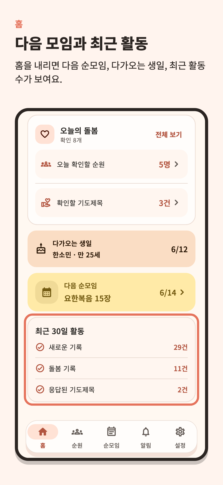
- 다가오는 생일: 생일이 가까운 순원과 나이가 보여요.
- 다음 순모임: 날짜가 앞으로인 모임 중 가장 가까운 것이에요. 누르면 그 모임으로 가요.
- 최근 활동: 최근 며칠 동안 남긴 기록, 돌봄 기록, 응답된 기도제목 수예요. 기간(7·30·90일)은 통계 기준에서 바꿔요.
- 백업 안내: 기록이 이 폰에만 있다는 안내가 함께 보여요. 누르면 백업 화면으로 가요.
3. 순원 탭
순원 한 사람 한 사람의 정보와 돌봄 기록, 기도제목을 모아 두는 곳이에요.
순원 추가
처음 순원을 추가할 때 '기록하기 전에' 안내가 한 번 떠요. 순원의 이름·연락처·생일과 앞으로 쌓일 기록이 이 폰에 저장된다는 내용이에요. 순원 본인에게 알리고 동의를 받아 주세요. 이 안내는 설정 → 보안과 개인정보 → 개인정보 안내에서 다시 볼 수 있어요.
순원 정보 입력
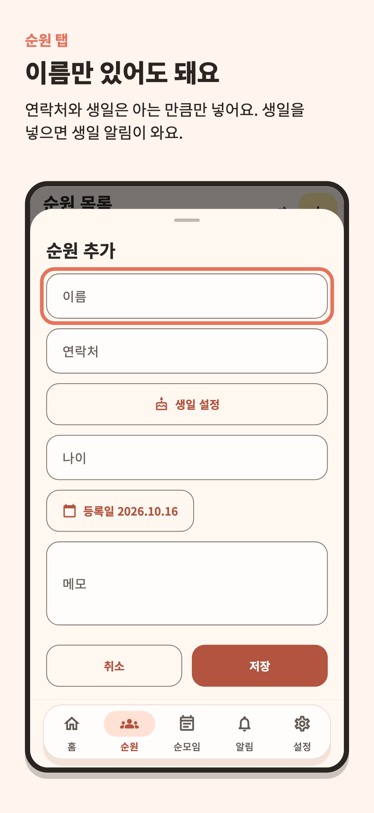
- 이름(필수)
- 연락처(선택)
- 생일(선택): 넣으면 생일에 알림이 와요. 생일을 모르면 나이만 적어도 돼요. 해가 바뀌면 나이는 저절로 올라가요.
- 등록일: 순에 들어온 날이에요. 기본은 오늘이에요.
- 메모: 짧게 기억해 둘 것을 적어요.
순원 찾기
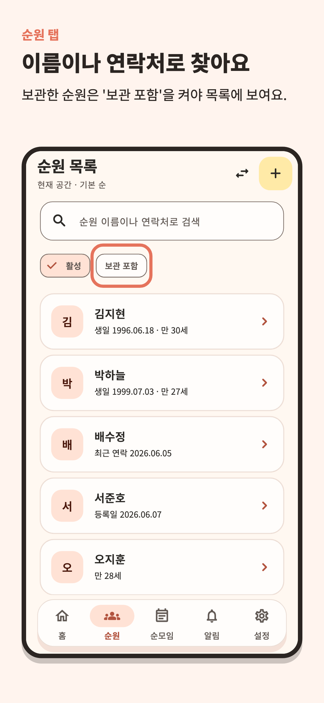
위쪽 검색창에 이름이나 전화번호 일부를 넣으면 바로 걸러져요. 목록에는 지금 활동 중인 순원만 보여요. 보관한 순원까지 보려면 보관 포함을 켜세요. 보관한 순원에게는 '보관' 표시가 붙어요.
돌봄 기록
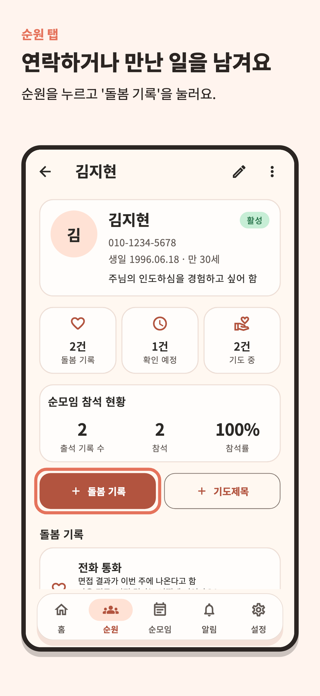
순원을 누르면 상세 화면이 열려요. 위쪽에서 돌봄 기록 수, 확인 예정 수, 기도 중인 기도제목 수와 순모임 참석 현황(출석 기록 수·참석·참석률)을 볼 수 있어요.
+ 돌봄 기록을 누르고 아래를 적어요.
- 유형: 전화 통화 · 메시지 · 만남 · 심방 · 기타
- 기록일: 연락하거나 만난 날
- 메모: 나눈 내용이나 상황을 짧게
저장한 기록은 상세 화면 아래 '돌봄 기록'에 쌓여요. 기록을 눌러 고치거나 지울 수 있어요.
다음에 물어볼 것
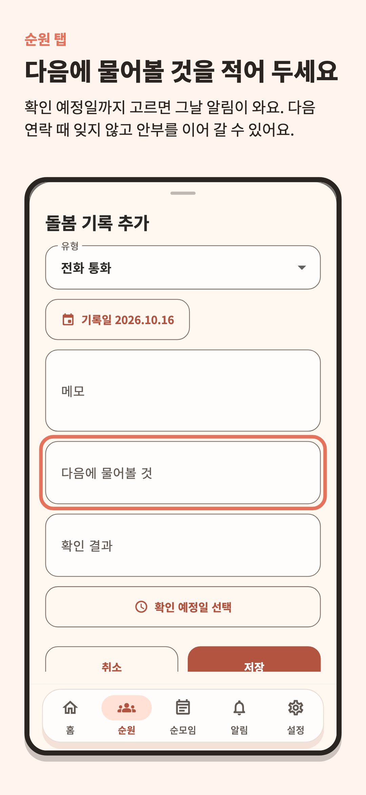
돌봄 기록 아래쪽의 다음에 물어볼 것에 질문을 적고 확인 예정일을 고르면, 그날 폰 알림이 오고 홈의 '오늘 확인할 순원'과 알림 탭에 올라와요.
예) "면접 결과는 어떻게 되었나요?" · 확인 예정일 다음 주 월요일
답을 들었으면 그 기록을 다시 열어 확인 결과에 적거나, 알림 탭에서 바로 확인 완료로 처리해요.
기도제목
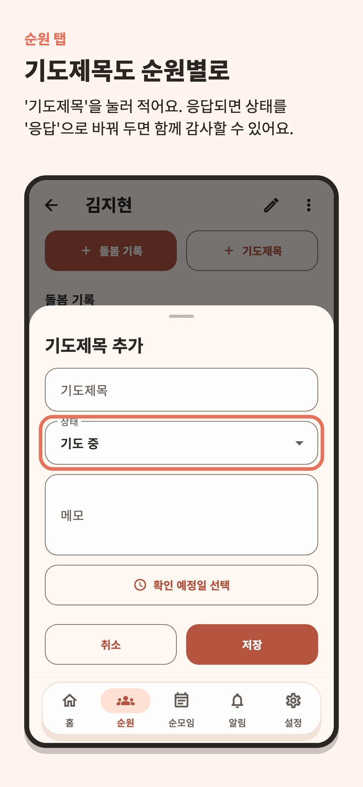
- 기도제목: 함께 기도할 제목
- 메모: 상황이나 함께 기도할 내용
- 상태: 기도 중 · 변화 있음 · 응답
상세 화면의 기도제목 목록에서 상태 단추를 누르면 바로 바꿀 수 있어요. '응답'으로 바꾼 기도제목은 홈의 최근 활동에 '응답된 기도제목'으로 세어져요. 순모임 기록 중에 적은 기도제목도 여기 함께 모여요.
수정·보관·삭제
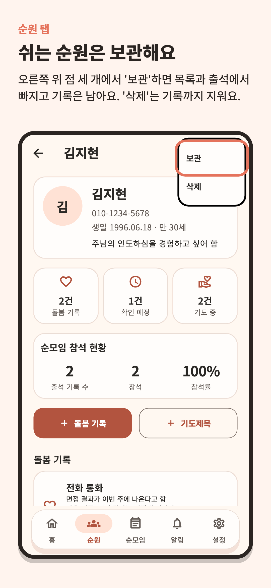
- 수정: 상세 화면 오른쪽 위 연필을 눌러 이름·연락처·생일 등을 고쳐요.
- 보관: 이사·휴학 등으로 쉬는 순원은 보관해요. 목록과 순모임 출석에서 빠지지만 기록은 그대로 남아요. 다시 오면 보관 해제를 눌러요.
- 삭제: 그 순원과 연결된 돌봄 기록, 기도제목, 출석 기록, 모임별 기록이 모두 지워지고 되돌릴 수 없어요. 본인이 지워 달라고 했을 때 쓰세요.
4. 순모임 탭
모임마다 말씀, 나눔, 출석을 남기고, 심방 약속을 달력에 잡는 곳이에요. 위쪽에서 목록과 달력을 바꿔 볼 수 있고, 검색창에서 제목·장소·말씀으로 찾을 수 있어요.
순모임 추가
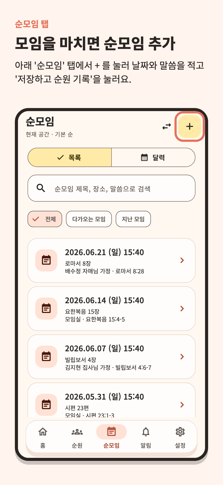
- 모임 제목: 예) 요한복음 15장
- 날짜·시간, 장소: 예) 모임실
- 본문: 예) 요한복음 15:4-5
- 나눔 메모: 함께 나눈 핵심 내용
- 다음 모임 메모: 다음 모임 준비나 공지
저장하고 순원 기록을 누르면 바로 출석과 나눔을 적는 화면으로 넘어가요. 날짜를 앞으로 잡으면 홈의 '다음 순모임'에 보여요.
출석과 나눔 기록
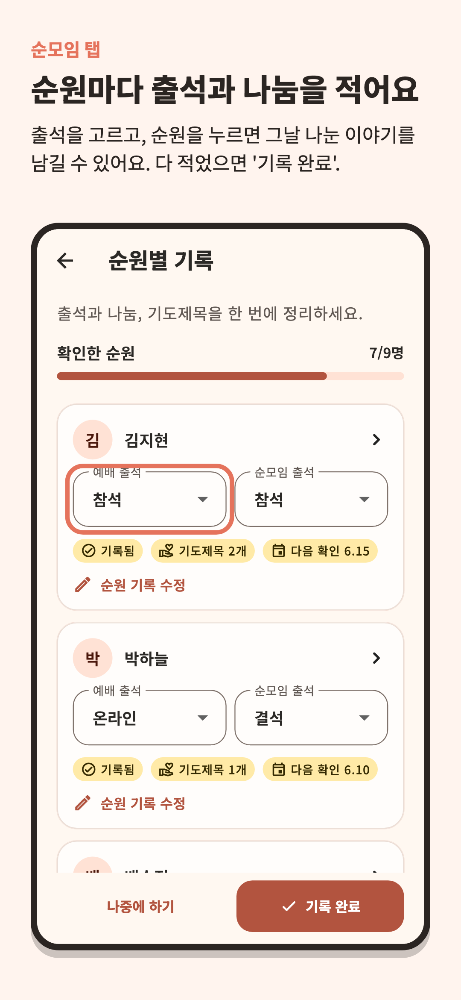
- 출석: 참석 · 온라인 · 결석 · 미입력. 참석과 온라인은 참석률에 '참석'으로 세고, 미입력은 참석률 계산에서 빠져요.
- 예배: 순모임 출석 옆에서 그 주 예배 출석도 같은 방식으로 따로 골라요.
- 순원별 기록: 순원을 누르면 그날 나눈 이야기, 기도제목(여러 개 추가 가능)과 기도 확인 예정일, 다음에 물어볼 것과 확인 예정일을 적을 수 있어요. 여기 적은 기도제목은 순원의 기도제목 목록에도 들어가요.
다 적었으면 기록 완료. 바쁘면 나중에 하기로 나가고, 나중에 모임 화면에서 이어 적어요.
지난 모임 보기·고치기
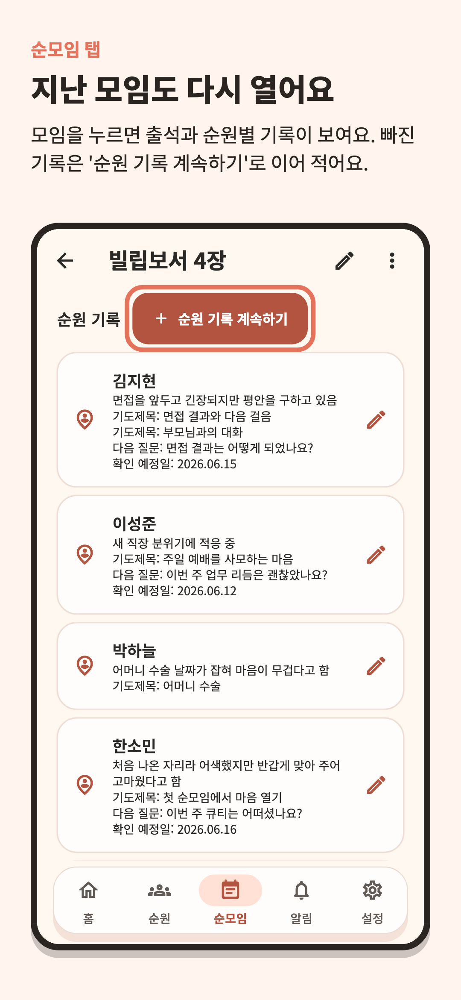
- 목록에서 모임을 누르면 모임 정보, 출석, 순원별 기록이 보여요.
- 순원 기록 계속하기: 빠진 순원의 기록을 이어 적어요. 순원 카드의 연필을 누르면 그 순원 기록만 고칠 수 있어요.
- 오른쪽 위 연필: 모임 제목·날짜·말씀 등을 고쳐요.
- 오른쪽 위 점 세 개: 순모임 보고서(이 모임으로 보고서 PDF 만들기)와 삭제가 있어요. 삭제하면 그 모임의 출석과 순원별 기록도 함께 지워져요.
달력과 심방 예정
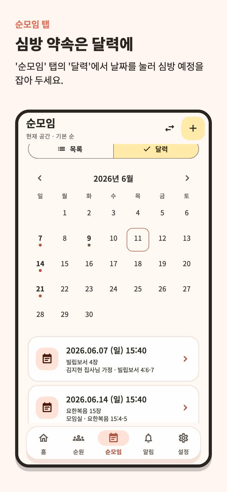
달력에서는 날짜별로 모임과 심방 예정이 점으로 표시돼요. 날짜를 누르면 그날 일정이 아래에 보이고, 이 날에 추가를 누르면 두 가지 중에서 고를 수 있어요.
- 순모임 추가: 정기 모임, 아웃팅처럼 함께 모이는 일
- 심방 예정 추가: 순원 한 명을 만나기로 한 날. 누구를 만나는지, 만나는 날, 메모(어디서 만나는지, 무엇을 나눌지)를 적어요.
심방 예정은 그 순원의 돌봄 기록에 '심방'으로 남아요.
↑ 목차로5. 알림 탭
확인할 날이 정해진 일들이 한곳에 모여요. 폰 알림을 놓쳤어도 여기서 다시 볼 수 있어요.
확인할 일 모아 보기
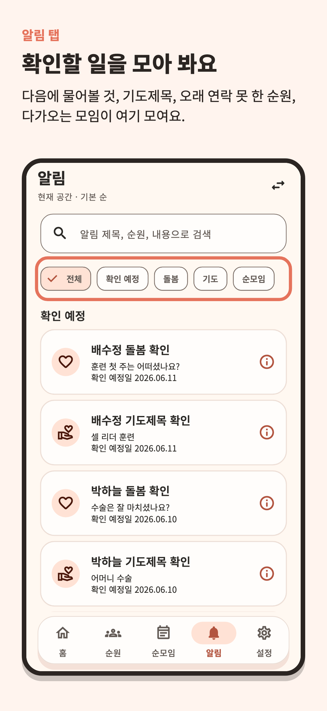
여기 올라오는 것은 네 가지예요.
- 돌봄 확인: 돌봄 기록에 적은 '다음에 물어볼 것'
- 기도제목 확인: 확인 예정일을 정한 기도제목
- 연락 확인: 연락 리마인더 기간 동안 연락 기록이 없는 순원 (새로 등록한 순원은 등록일부터 세요)
- 다가오는 순모임
위쪽 단추로 전체 · 확인 예정 · 돌봄 · 기도 · 순모임만 골라 보고, 검색창에서 제목·순원 이름·내용으로 찾을 수 있어요.
알림에서 바로 기록하기
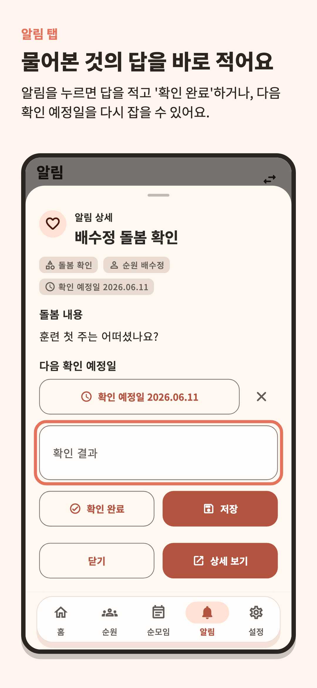
- 확인 결과에 들은 답을 적고 저장하거나 확인 완료를 누르면 목록에서 내려가요.
- 아직 못 물어봤다면 다음 확인 예정일을 다시 골라 미뤄요. × 를 누르면 예정일을 지워요.
- 기도제목 알림은 기도 상태를 바꾸거나 완료 처리할 수 있어요.
- 연락 확인 알림에는 돌봄 기록 추가가 있어 연락한 내용을 바로 남겨요.
- 상세 보기를 누르면 그 순원의 상세 화면으로 가요.
6. 설정 탭
알림, 화면, 보고서, 백업, 잠금을 다루는 곳이에요. 위에서부터 차례로 설명할게요.
알림·화면·통계 설정
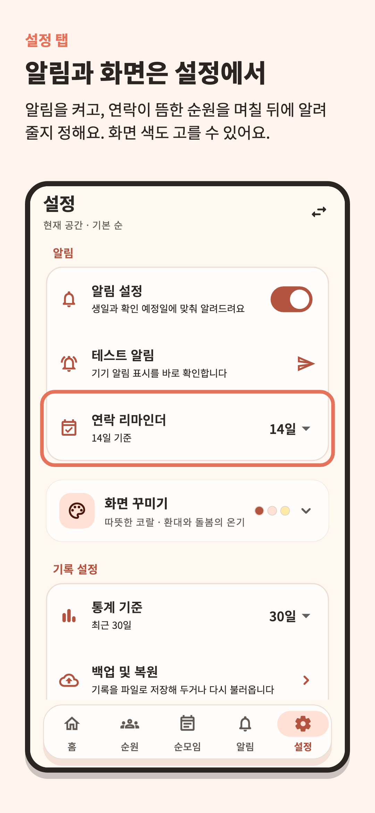
- 알림 설정: 생일과 확인 예정일 알림을 켜고 꺼요. '알림이 꺼져 있어요'가 보이면 폰 설정 → 알림에서 함께지음을 켜 주세요.
- 테스트 알림: 알림이 잘 오는지 바로 확인해요.
- 연락 리마인더: 7 · 14 · 21 · 30일 중에서 골라요. 이 기간 동안 돌봄 기록이 없는 순원을 '연락 확인'으로 알려 줘요.
- 화면 꾸미기: 따뜻한 코랄 · 차분한 라벤더 · 옐로·네이비 중 색을 골라요.
- 통계 기준: 홈 '최근 활동'을 7 · 30 · 90일 중 몇 일 동안으로 셀지 정해요.
순모임 보고서 PDF
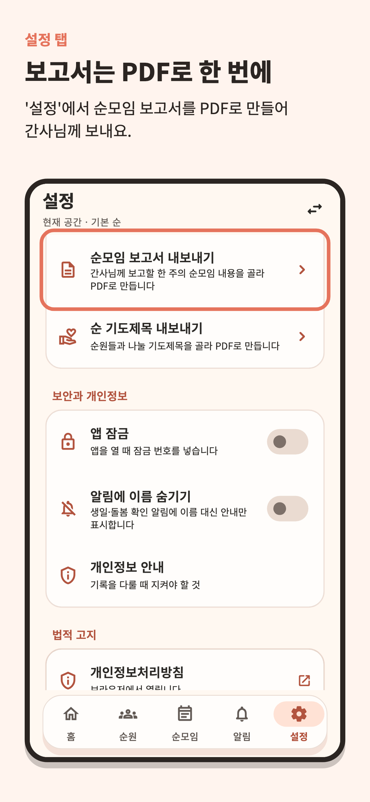
설정 → 기록 설정 → 순모임 보고서 내보내기를 누르면 한 주의 순모임 출석과 나눔, 기도제목을 PDF로 만들어요. 다 만든 PDF는 미리보기에서 확인하고 카카오톡·메일 등으로 바로 보낼 수 있어요.
보고서 내용 고르기
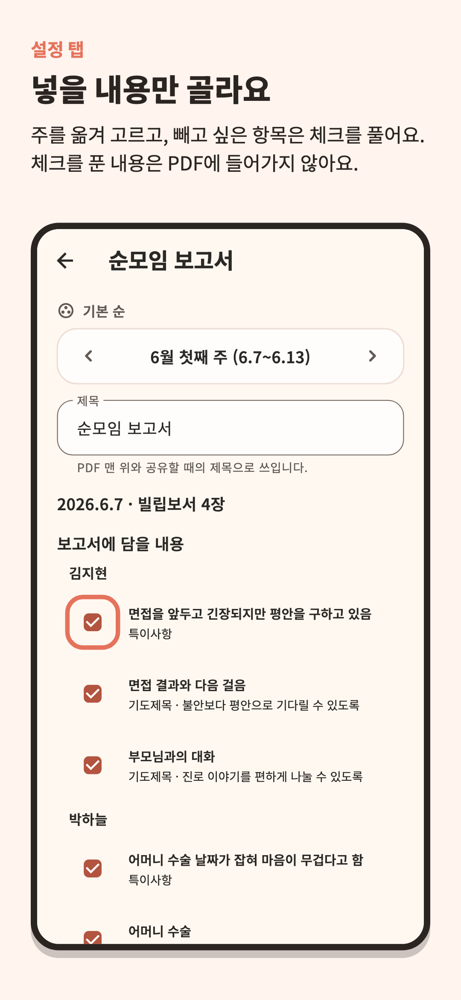
- 위쪽 ‹ › 로 주를 옮겨요.
- 제목은 PDF 맨 위와 보낼 때 이름으로 쓰여요.
- 모임마다 적은 특이사항과 기도제목이 체크 목록으로 나와요. 간사님께 굳이 알릴 필요 없는 개인적인 내용은 체크를 풀어 빼 주세요.
기도제목 PDF
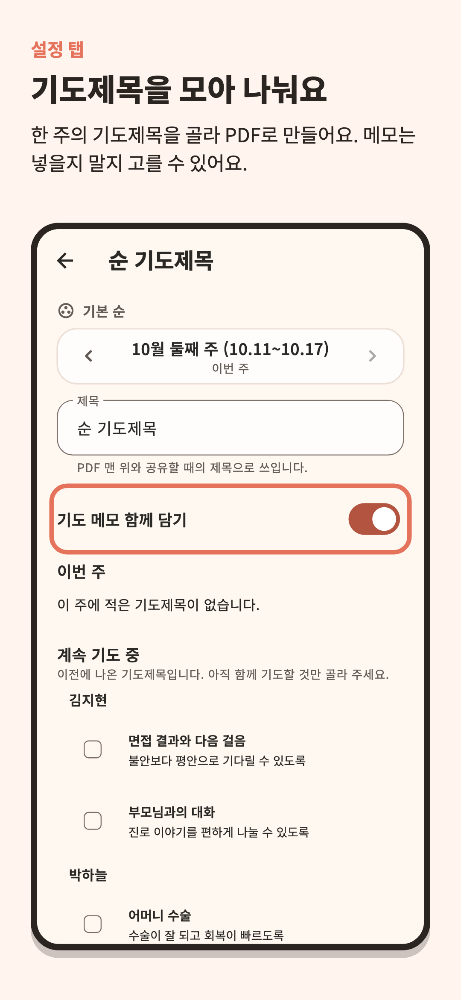
설정 → 기록 설정 → 순 기도제목 내보내기. 순원들과 함께 기도할 제목을 PDF로 만들어요.
- 이번 주: 그 주에 적은 기도제목
- 계속 기도 중: 이전에 나온 기도제목 중 아직 함께 기도할 것만 골라 넣어요.
- 기도 메모 함께 담기: 끄면 제목만 들어가요. 순원 전체와 나눌 때는 메모를 빼는 것이 안전해요.
백업이 필요한 이유
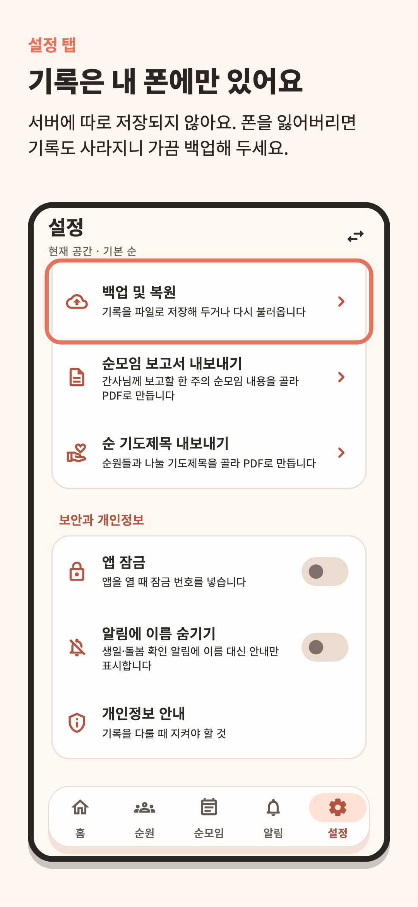
함께지음은 회원가입도 서버도 없어요. 기록은 이 폰 안에만 있어서 밖으로 새지 않지만, 폰을 잃어버리거나 앱을 지우면 함께 사라져요. 한 달에 한 번쯤 백업 파일을 만들어 두세요.
백업 파일 내보내기
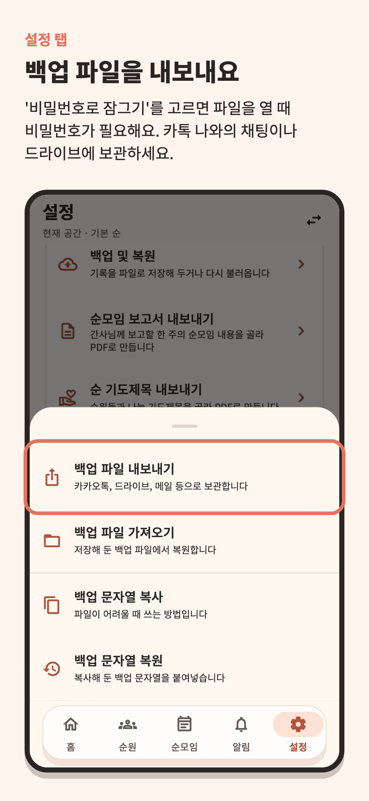
- 설정 → 백업 및 복원 → 백업 파일 내보내기
- 비밀번호로 잠그기를 고르고 비밀번호를 두 번 넣어요. (잠그지 않고 내보낼 수도 있어요.)
- 공유 창에서 카카오톡 나와의 채팅, 드라이브, 메일 등에 저장해요.
비밀번호를 잊으면 그 백업 파일은 아무도 열 수 없어요. 잘 기억해 두세요. 잠그지 않은 파일은 받은 사람 누구나 열 수 있으니 다른 사람에게 보내지 마세요.
파일 저장이 어려우면 백업 문자열 복사로 글자 형태의 백업을 복사해 메모 앱 등에 붙여 둘 수 있어요. 되살릴 때는 백업 문자열 복원에 붙여 넣어요.
새 폰에서 가져오기
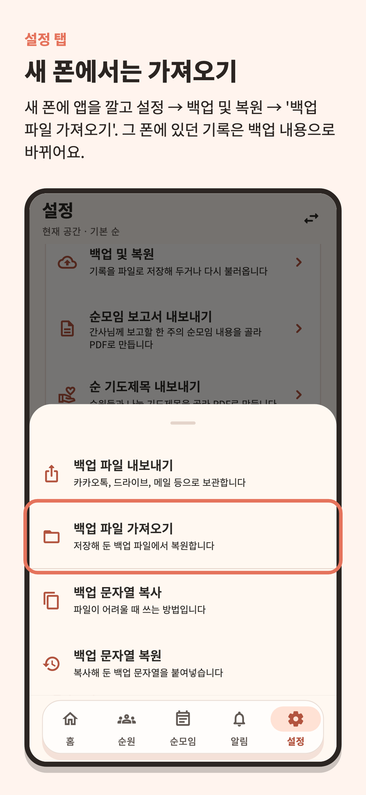
- 새 폰에 함께지음을 설치해요.
- 설정 → 백업 및 복원 → 백업 파일 가져오기에서 저장해 둔 파일을 골라요.
- 잠근 백업이면 비밀번호를 넣어요.
- '기존 기록을 지우고 복원할까요?'에서 개수를 확인하고 복원해요.
복원하면 그 폰에 있던 공간·순원·기록이 모두 지워지고 백업 내용으로 바뀌어요. 그 폰의 기록이 더 최신이라면 먼저 그 폰에서 백업을 하나 더 만들어 두세요.
앱 잠금과 개인정보
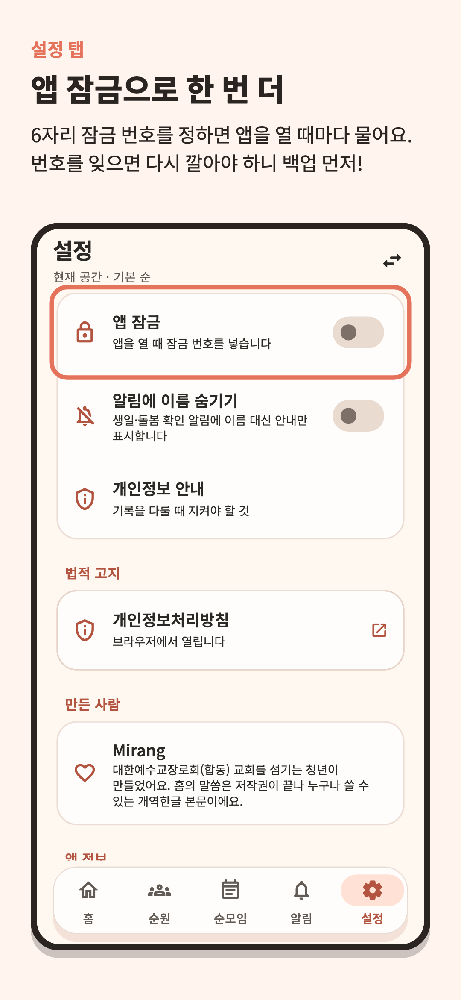
- 앱 잠금: 켜고 6자리 숫자를 두 번 넣어요. 그다음부터 앱을 열 때 번호를 물어요. 폰에서 지원하면 지문·얼굴로 열기도 쓸 수 있어요. 번호를 여러 번 틀리면 잠시 기다려야 해요.
- 잠금 번호 바꾸기: 잠금을 켠 뒤에 보여요.
- 알림에 이름 숨기기: 잠금 화면에 뜨는 생일·돌봄 알림에 순원 이름 대신 안내만 보여요. 다른 사람이 폰 화면을 볼 수 있을 때 켜 두세요.
- 개인정보 안내: 순원의 이야기를 다룰 때 지켜야 할 것을 정리했어요. 들은 이야기를 다른 사람에게 옮기지 않기, 백업 파일과 PDF 조심하기, 지워 달라고 하면 지워 주기 등이에요.
잠금 번호를 잊으면 앱을 지우고 다시 깔아야 하고, 그러면 기록도 함께 사라져요. 잠금을 켜기 전에 꼭 백업을 만들어 두세요.
앱 정보
- 개인정보처리방침: 브라우저에서 열려요.
- 이용 가이드: 지금 보고 있는 이 페이지예요.
- 업데이트 소식: 버전마다 바뀐 점을 볼 수 있어요. 업데이트한 뒤 처음 열 때도 한 번 보여요.
7. 자주 묻는 질문
순장님이나 간사님도 내 기록을 볼 수 있나요?
아니요. 기록은 내 폰에만 있고 어디로도 보내지 않아요. 보고서 PDF나 백업 파일을 직접 보냈을 때만 그 내용이 전달돼요.
폰을 바꾸면 어떻게 하나요?
옛 폰에서 백업 파일 내보내기 → 새 폰에서 백업 파일 가져오기를 하면 그대로 옮겨져요.
알림이 안 와요.
설정 → 알림 설정이 켜져 있는지, 폰 설정 → 알림에서 함께지음이 허용돼 있는지 확인하고 테스트 알림을 눌러 보세요. 알림은 생일과 '확인 예정일'을 정한 항목에만 와요.
순원이 기록을 지워 달라고 해요.
순원 상세 → 오른쪽 위 점 세 개 → 삭제를 누르면 그 순원과 관련된 기록이 모두 지워져요. 예전에 만든 백업 파일과 보낸 PDF에도 남아 있을 수 있으니 함께 지워 주세요.
돈이 드나요?
아니요. 모든 기능이 무료이고 광고도 없어요.
더 궁금한 점은 wnshroqkf@naver.com 으로 물어봐 주세요.